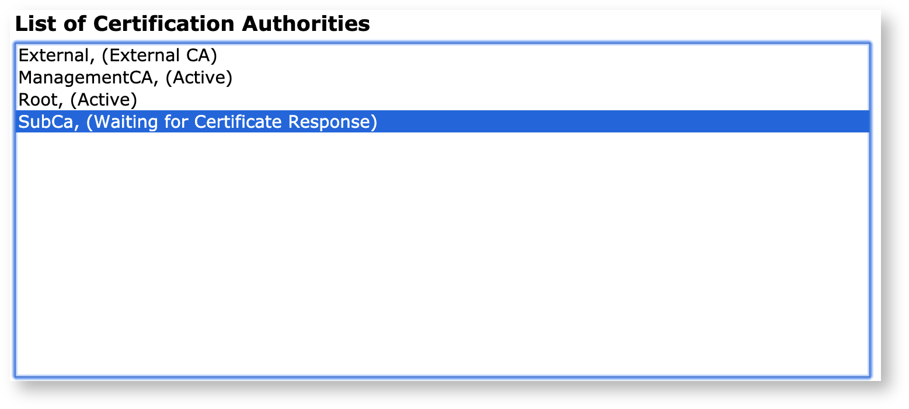

Managing CAs
This Certificate Authority Operations section provides information on managing CAs and instructions on how to create, renew, revoke, and import and export Certificate Authorities (CAs).
For more conceptual information on CAs, see Certificate Authority Overview.
This page primarily covers x509 CAs. For information about CVC CAs, see the CVC Operations page.
Creating CAs
Once through your first installation, you'll have a default CA created on your instance of EJBCA called the Management CA. This CA is EJBCA's own bootstrap CA, and will be used by you internally from now on in order to issue end user certificates for your administrators.
From here on, you're free to create three types of CAs:
Root CAs
To add a root CA, fill in the desired name at Add CA and click Create.
This will move you on to the edit CA screen. The important things to pick here is the signer of the CA's certificate, and picking the correct Certificate Profile.
Self Signed means that this CA has signed itself, i.e. making it a root. The certificate profile can either be the ROOTCA template, or a derivative of it. Fill in any other desired values, then click Create at the bottom of the screen.
Creating a Root CA through the Command Line Interface (CLI)
You can create CAs using the following CLI command:
$ bin/ejbca.sh ca initIssuing the command with the flag --help will print a full list of all flags and options. A typical example of using this command is as follows:
$ bin/ejbca.sh ca init TestRoot "C=SE,O=PrimeKey,CN=TestRoot" soft foo123 2048 RSA 365 --policy 2.5.29.32.0 SHA256WithRSAThis will create a root CA with the DN C=SE,O=PrimeKey,CN=TestRoot. The key length is 2048 bit (RSA) and the validity of the root certificate is 365 days. You need to quote the DN so it is treated as one argument. PKIX requires that a CRL always is available even if it is empty. When creating a new CA the CA certificate is stored and published (if any Publishers are configured), and the initial CRL is created and stored/published.
External CAs
For some uses such as replying to OCSP queries, you may want to import a CA certificate from a CA which exists on another instance of EJBCA, or from another CA distribution entirely. To do so, click Import CA Certificate.
You'll then be asked to first name the externally imported CA and then upload the certificate belonging to that CA.
Clicking Import CA Certificate will create a proxy for this CA locally.
This CA will naturally not be editable, and the only available actions are setting up some OCSP functionality and the ability to update the certificate should a new one be issued.
Sub CAs
A sub CA (or intermediate CA) is a CA which is signed by another CA. To create a sub CA, specify a name the Add CA field and click Create.
Creating a Sub CA signed by a local CA
If the signer of the Sub CA exists locally on the same instance, pick that CA as Signed By:

The certificate profile should either be the SUBCA template or a derivative of it.
Creating a Sub CA Signed by an External CA
Alternatively, it may be desirable (and not uncommon) to have the CA be signed by an External CA, as defined above. Going through the same steps during the creation process, when picking Signed By, choose on the predefined value External CA.
Notice that the Certificate Profile isn't choosable, as this will be decided by the issuing CA. Likewise, the fields Validity, Subject Alternative Name and Policy Id will also be defined by the issuing CA.
Going to the bottom of the screen, click Make Certificate Request.
This will bring you to a Certificate Signing Request (CSR) which you can either copy down to a file or download as either a PEM or a binary DER file, which you can then bring to your issuing CA to be signed.
This creates the Sub CA in a waiting state.

Once the CSR has been signed and a certificate received, click Edit CA and scroll down to the section named Externally signed CA creation/renewal. From here you can either create a new CSR (for future renewals) or upload the signed certificate from the issuing CA:
Click Receive Certificate Response, and you should be good to go.
Creating a CA Signed by an External CA Using the CLI
Create the CA generating a CSR. Note that the Crypto token password is set to foo123:
$ bin/ejbca.sh ca init CaSignedByExteral "CN=This CA is Signed by an external CA" soft foo123 secp256r1 ECDSA 365 null SHA256withECDSA --signedby External -externalcachain chain.pemThe file chain.pem contains the certificate chain of the external CA, as described above. Running the above command, a CSR named CaSignedByExteral_csr.der is saved to your disk, containing a PKCS#10 CSR in binary format. Send the CSR to the external CA and get the signed sub CA certificate returned back.
Import the sub CA certificate, activating your CA:
$ bin/ejbca.sh ca importcacert CaSignedByExteral subcacertificate.pemThe file subcacertificate.pem contains the received sub CA certificate.
Creating a CA through EJBCA's WebService API
ENTERPRISE This is an EJBCA Enterprise feature.
If EJBCA's web service is set up, it is also possible to create new CA by using the WS API call createCA in your application or with the Web Services CLI.
Requesting a Cross or Bridge Certificate
If you have set up your own CA you can request another CA to cross certify your CA, or you can get certified by Bridge CA such as the Federal Bridge.
Handling the certificate chains on clients is out of the scope for EJBCA.
This is done in the following way:
In the Edit CA page, choose a CA that you intend to get cross certified by another CA and click Edit.
In the lower part of the screen, click on Make Certificate Request and skip upload of the signing certificate chain.
Save the created PKCS#10 certificate request to disk and send to the other CA.
Now you have a certificate request to send to the other CA or Bridge CA. When the other CA has issued a certificate for you, everything is completed. You don't need to (and usually should not) import the cross-certificate or bridge-certificate in EJBCA. What you need to do is make sure the clients using the certificates issued by your CA have access to the correct certificate chain. If you are cross-certified with several other CA, multiple possible certificate chains exist.
If you choose to upload the resulting certificate chain, this will convert your CA from an internal CA to an externally signed CA.
Renewing CAs
When a CA expires you have the choice of renewing the existing CA, or creating a new CA. Note that our general recommendation is to create a new CA subject DN when renewing Root CAs, see CA Rekey Recommendations. The following describes renewing a CA certificate keeping the same subject DN.
You can renew CAs in different ways:
Renew only CA certificate, using the same keys.
Renew CA keys and certificate.
To renew only the CA certificate using the same keys, click Renew CA. Note that your CA must be online to be able to sign the new certificate (if a self-signed CA), or the certificate request (if a sub CA). Additionally, if using a sub CA with the root CA in the same EJBCA instance, the root CA is also required to be online.
When renewing the CA certificate without renewing keys, the same signing key is used as before, and the subject key ID in the CA certificate will stay the same. This option is useful if something in the CA certificate needs to be fixed. To limit the time a Root CA key is used it is considered best practice to do a CA rollover with renewing CA signature keys.
To renew the CA keys, set Next CA key to Generate new key using KeySequence and click Renew CA. Note that not all HSMs support renewal of CA keys.
When using an HSM, manual renewal of keys can also be made by generating new keys on the HSM, using for example the EJBCA CLI tools, and then selecting the generated keys in the Next CA key field and clicking Renew CA.
Using CA Rollover
It is possible to renew a CA certificate, but not activate the new certificate and key immediately. This is useful for CA certificates that will become valid at some point in the future (in EJBCA, such certificates can be created by checking "Allow Validity Override" in the certificate profile). A such certificate is called a rollover certificate or a next CA certificate, and can be used in the SCEP protocol.
First, make a certificate request as usual. Then you may receive the CA certificate response without activating it. To do so, edit the CA and check the "Rollover certificate (activated later)" checkbox. Then select the new CA certificate file its corresponding key. Then click "Receive Certificate Response". A message will appear, which shows when the rollover certificate becomes valid, and may be activated.
At a later point, the new rollover certificate may be activated. To activate it, edit the CA and scroll down to "CA Life Cycle". There should be text telling when the current certificate expires and when the rollover certificate becomes valid. If not, the CA doesn't have any rollover certificate. Click the button "Perform CA Rollover", and the new rollover certificate will be activated.
There is also a service, Rollover Service, that can be configured to activate rollover certificates automatically once they become valid. There will be a 10 minute delay in this case to allow for a small amount of clock skew.
Signing a Rollover Certificate a.k.a Link Certificate
One way to handle update of trust points when renewing a Root CA is to generate a certificate that contains the new key signed with the old key. For X.509 CAs, you can create such a certificate by selecting Create link certificate before renewing the CA. The latest link certificate can then be downloaded from the Edit CA view. For CVC CAs a link certificate is always generated during the renewal.
ICAO and some other PKI have stated requirements to create link certificates, new-with-old, in order to distribute new Root CA certificates without the need for an out of band secure channel (i.e. clients can verify the new Root certificate with their existing trust anchor). Some RFCs (for example, RFC4210) also specifies an old-with-new link certificate. Although we do not see much practical use of this type of link certificate, it is possible to create such an old-with-new link manually according to the following instructions.
Do not perform the following steps unless you are sure that an old-with-new link certificate is required.
If you need to create an old-with-new link certificate, perform the following steps:
Before starting the renewal, create a CSR from the Root CA.
Once the renewal is completed, sign the CSR with the new Root CA.
Ensure that the CA has the options Enforce unique DN and Enforce unique public keys disabled during this operation.
Create a suitable SubCA certificate profile for the OldWithNew link certificate. Use the option Allow Subject DN Override by CSR and configure all attributes desired.
Create an end entity profile for the OldWithNew with the proper subject DN naming fields.
Issue the certificate, using the CSR from the old CA keys, signing the certificate with the new CA keys.
Verify the contents of the certificate carefully and that the correct links verify as they should.
Revoking CAs
When revoking a sub CA, you can choose to only revoke the sub CA certificate or to revoke the sub CA certificate and all certificates issued by the sub CA. A TLS client would normally check the revocation status of each certificate in the certificate chain, in which case revoking only the sub CA certificate would be sufficient.
Revoking a CA Certificate
You revoke a sub CA certificate the same way as you revoke any other certificate in EJBCA. To revoke a sub CA certificate, do the following on the EJBCA instance where the issuer of the sub CA (normally a root CA) resides:
Go to the RA Web and select Search → Certificates.
Search for the certificate by entering the common name of the sub CA, and click View to view the sub CA certificate.
Choose a revocation reason in the certificate status list menu and click Revoke to revoke the sub CA certificate.
Go the CA UI and click CA Structure and CRLs.
Click Create CRL on the appropriate issuer (root CA) to create a new CRL.
Optionally, download and distribute the new CRL to VA instances manually if this is not done automatically with a publisher.
Revoking All Certificates Issued by a CA
You can also revoke all certificates issued by the sub CA. To revoke all certificates issued by the sub CA, do the following on the EJBCA instance where the sub CA resides:
This operation may potentially create a very large CRL if the sub CA has issued a great number of certificates.
Go to the CA UI and click Certification Authorities.
Select the sub CA whose certificates you want to revoke, and click Edit CA to edit the sub CA.
In the CA Life Cycle section, choose a revocation reason and click Revoke to revoke all certificates issued by the sub CA that are not yet revoked. This will also create a new CRL.
If the CA is connected to a VA using peers, the VA will not automatically get the new status of the revoked certificates and you therefore need to synchronize manually as follows:
Click Peer Systems in the menu.
Click Manage on the appropriate peer connector.
In the Certificate Data Synchronization tab, choose Only sync revoked and then click Start to push the status of the revoked certificates to the VA.
Exporting and Importing CAs
Under certain circumstances, it can be wise to back up the CA's signature and encryption keys. Remember to protect the backup in the same way as the CA itself.
Soft token CAs can be exported and backed up. CAs with the keys on an HSM cannot be exported through EJBCA. Use the HSMs methods to back up such keys.
Soft token CAs can be imported using both the CLI and Admin GUI, while HSM CAs can only be imported using the CLI.
The aliases of the keys in exported key stores are important when importing the key stores, and allow you to assign the correct keys. To list the aliases (or friendlyName in OpenSSL terminology) in a PKCS#12 file, use the following OpenSSL command:
$ openssl pkcs12 -in /home/user/tmp/kesytore.p12Using the CA UI
To export and import the CA's keys using the CA GU, you need super administrator access. Make sure that .p12 files are not automatically saved to an unsuitable place by your browser before you perform an export.
To export the CA's keys, do the following:
Select the Certificate Authorities menu option.
Select the CA to export and click Edit.
Next to CA export requires the keystore password, enter the keystore password.
Click Export CA keystore.
The PKCS#12-file will be downloaded by your browser to the location you specify.
To import the CA's keys, do the following:
Select the Certificate Authorities menu option.
Click Import CA keystore.
Specify the CA's name, full pathname to the PKCS#12-file, and keystore password.
If you exported the CA's keys using EJBCA, do not edit the two Alias field default values.
Click Import CA keystore.
Using Command Line Interface
To export a CA named TestCA to the PKCS#12-file /path/TestCA.p12 with password foo123, enter the following from the $EJBCA_HOME directory:
$ bin/ejbca.sh ca exportca TestCA ./TestCA.p12Using JBoss JNDI provider...Enter keystore password: foo123$To import the backup keys for TestCA later, enter the following from the $EJBCA_HOME directory:
$ bin/ejbca.sh ca importca TestCA /path/TestCA.p12 SignatureKeyAlias EncryptionKeyAliasUsing JBoss JNDI provider...Enter keystore password: foo123$To view usage instructions on how to import HSM CAs, run the following command:
$ bin/ejbca.sh ca importca --helpIf you import multiple CAs that are using the same HSM, and the same slot on the HSM, duplicate crypto tokens are created in EJBCA. Although there should only be one crypto token per slot, one crypto token per CA is created during the import of the CAs. To merge these crypto tokens after the import is complete, use the CLI command mergecatokens:
$ bin/ejbca.sh ca mergecatokens --helpRemove and Restore a CA Soft Key Store
Soft token CAs can have their keystore removed from the database. When the keystore is removed, the CA cannot issue certificates and its CA token status is set to offline.
Before removing the keystore, export it first to allow restoring it later, see Export and Import CAs above.
To remove the catoken keys for TestCA, enter the following from the $EJBCA_HOME directory:
$ bin/ejbca.sh ca removekeystore TestCAUsing JBoss JNDI provider...$ To restore the catoken keys again for TestCA with the keystore exported as TestCA-exported.p12, enter the following from the $EJBCA_HOME directory:
$ bin/ejbca.sh ca restorekeystore TestCA /path/TestCA-exported.p12 -s SignatureKeyAlias -e EncryptionKeyAliasUsing JBoss JNDI provider...Enter keystore password: foo123$